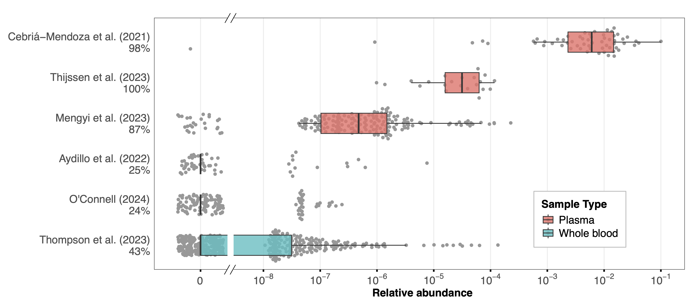
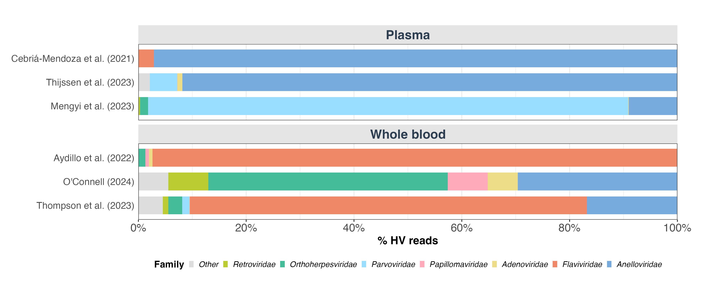
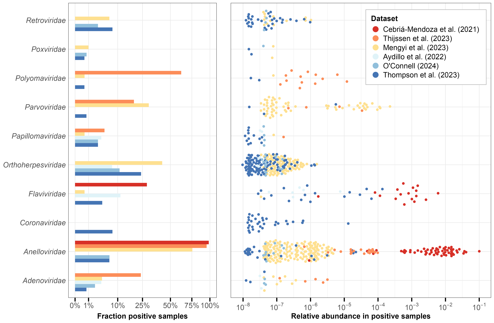
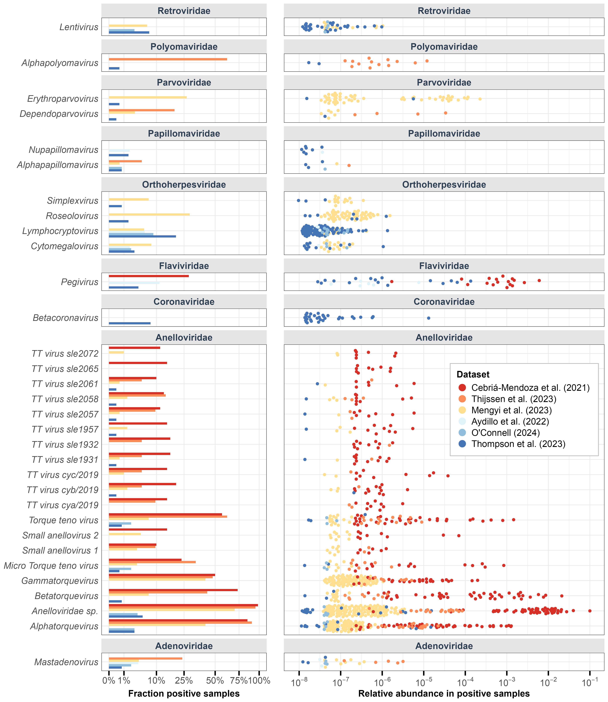

This is the third post in a series of blogs exploring blood-based biosurveillance for novel pathogen detection as part of the NAO’s effort to evaluate different biosurveillance approaches. We once again thank our colleagues at the NAO, particularly Jeff Kaufman and Will Bradshaw, for their valuable feedback.
Summary
To help assess the effectiveness of blood-based biosurveillance, we reanalyzed six publicly available whole blood and plasma metagenomic sequencing datasets, examining both kingdom-level composition and the prevalence and relative abundance of human-infecting viruses (HVs). These studies represent diverse sample processing methods, donor populations, and sequencing approaches. Our analysis revealed that sample type and processing methods can strongly influence viral detection. Plasma samples consistently showed higher total HV relative abundance than whole blood, particularly when employing additional filtration to remove human nucleic acid, though this step may reduce detection of primarily intracellular viruses.
Anelloviridae was the most consistently detected viral family, appearing in most datasets with particularly high prevalence in plasma samples. We also detected viral families associated with intracellular latent infections, including Orthoherpesviridae and Retroviridae. These findings align well with known epidemiology of blood-borne and latent viral infections. Common respiratory viruses were largely absent, suggesting that a biosurveillance system aiming for coverage of the full range of human viruses will need to combine multiple sample types.
Introduction
Untargeted metagenomic sequencing (MGS) of blood-derived samples could enable greatly improved early detection of novel viral threats. In our previous posts, we examined the biological characteristics of blood and identified promising strategies for accessing samples in high-throughput from the U.S. blood supply system. In this post we investigate the human blood virome by reanalyzing a diverse set of MGS datasets to better understand pathogen presence and relative abundance (RA) – key metrics for determining the sensitivity, cost, and robustness of any future blood-based biosurveillance system.
We reanalyze six publicly available MGS datasets, drawn from both whole blood and plasma. We apply a consistent computational pipeline to characterize the blood virome, examining the RA and prevalence of human-infecting viruses (HV) across studies with distinct sample types, sample processing methods, and donor populations. Our findings help quantify the potential role of blood-based surveillance within a broader system for detecting emerging pathogens, complementing existing approaches like wastewater and respiratory swab sampling.
The MGS datasets
We sought MGS data to characterize the blood virome of healthy donor populations1 that could represent eligible blood and plasma donors, looking for three datasets for each sample type (whole blood and plasma). After an initial literature review, we excluded a number of suitable studies due to the lack of publicly available data (1) or the requirement of onboarding procedures to access the data (2). We ultimately relaxed the requirement for data strictly from healthy donors and selected six publicly accessible, short read Illumina MGS datasets to re-analyze (Table 1).
| Study | Sample type | Country† | Donor description | Samples (Contributing individuals) | Total read pairs (Avg. per sample) | Sample prep optimization for viruses? | Nucleic acid sequenced | Read type |
|---|---|---|---|---|---|---|---|---|
| Cebriá-Mendoza et al. (3) | Plasma | Spain | Healthy | 60 (587) | 230M (3.8M) | Yes | DNA+RNA | 2x150 bp |
| Thijssen et al. (4) | Plasma | Iran | Healthy | 21 (100) | 116M (5.6M) | Yes | DNA+RNA | 2x150 bp |
| Mengyi et al. (5) | Plasma | China | Healthy | 201 (≤10,720††) | 3.4B (17.1M) | No | DNA | 2x150 bp |
| Aydillo et al. (6) | Whole blood | USA | Healthy | 53 | 1.7B (32.8M) | No | RNA | 2x100 bp |
| O’Connell (7) | Whole blood | USA | Emergency room patients with chronic health condition | 138 | 3.1B (22.5M) | No | RNA | 2x150 bp |
| Thompson et al. (8) | Whole blood | USA | Hospitalized COVID-19 patients and healthy controls2 | 417 | 27.7B (66.4M) | No | RNA | 2x100 bp |
Table 1: Key characteristics of the six metagenomic sequencing datasets analyzed in this study. Numbers in parentheses indicate total donors contributing to pooled samples. Datasets are ordered by increasing percentage of human reads (see Table 2). Detailed descriptions of each study available in Appendix 1. †: Country denotes countries where the donations occurred. ††: The total number of donations that contributed to all samples is 10,720; the authors do not state whether some individuals contributed multiple donations.
The datasets included were originally generated for a variety of purposes, ranging from characterizing the healthy human blood virome (3–5) to studying host responses during vaccination (6), evaluating biomarkers for chronic conditions (7), and investigating molecular signatures of long COVID (8). As a result, these studies exhibit substantial methodological differences that complicate direct comparisons between plasma and whole blood as sample types.
Donor population: The plasma studies analyzed samples from healthy donors across different countries, with all studies using pooled samples from multiple donors within the same region. In contrast, the whole blood studies analyzed individual (unpooled) samples from both healthy and ill participants exclusively within the U.S.
Sample processing: The plasma studies had varying levels of sample processing to remove human cellular material. While the methods used to separate plasma from whole blood in Cebrià-Mendozá et al. (3) and Thijssen et al. (4) were not specified, both studies employed additional viral enrichment protocols on their plasma samples, including filtration of remaining host cells (1.0 μm and 0.8 μm respectively) and nuclease treatment of unprotected nucleic acids. In contrast, Mengyi et al. (5) separated plasma from whole blood using centrifugation and employed an additional ultracentrifugation step to concentrate viruses and other material into a pellet, without filtration or nuclease treatment steps. The whole blood studies used standard RNA sequencing protocols focused on host transcriptomics, with cell lysis, RNA extraction, and depletion of ribosomal and globin RNA.
Sequencing approach: Whole blood studies using RNA sequencing exclusively at higher depth (average reads/sample ranging from 22-66M), while plasma studies used either DNA sequencing alone or combined DNA/RNA approaches at lower depth (average reads/sample ranging from 3-17M). While RNA-only studies can still detect DNA viruses through their transcripts, and DNA studies can capture some RNA viruses through reverse-transcribed DNA intermediates, the nucleic acid type sequenced is certain to impact detection sensitivity of different viral families.
These differences in sample preparation, donor population, and sequencing approach make it challenging to isolate the effects of sample type on taxonomic composition. Some studies have more successfully controlled for these variables in direct comparisons of whole blood and plasma (9–12), though their underlying data is often restricted. Nevertheless, analyzing these diverse datasets through a single computational pipeline allows us to observe consistent trends and assess variation across methodologies. Further relevant details on the studies are described in Appendix 1.
Computational methods
We processed all datasets through a modified version of the viral metagenomic sequencing pipeline (v2.2.1) described in Grimm et al. (13). To reduce computational requirements, we simplified the adapter trimming steps by using only FASTP rather than the original combination of FASTP, Cutadapt, and Trimmomatic.
The pipeline consists of two workflows: the taxonomic profiling workflow and the viral identification workflow. The taxonomic profiling workflow uses Kraken2 to assign reads to the least common ancestor (based on NCBI taxonomy) of matched genomes in the Kraken2 Standard database, which includes RefSeq prokaryotic, viral, and vector genomes along with the human genome. Results from this workflow determine the kingdom-level composition shown in Table 1. Since the database lacks non-human eukaryotic reference genomes, reads from such organisms are expected to remain unassigned.
The viral-identification workflow maps reads with Kraken2 (also with the Standard database) and aligns reads using Bowtie2 to an expanded database of human-infecting virus genomes from GenBank, reporting putative human-infecting virus reads based on the condition that the read aligns by Bowtie2 to a human virus and is not mapped by Kraken2 to a taxon that is not a human virus. We use the Bowtie2 assignment as the taxonomic assignment of a read.3
We applied additional filtering to taxonomic assignments in our downstream analysis. First, we removed reads from the Cebrià-Mendoza et al. (3) dataset that Kraken2 assigned to Microviridae or Rhabdoviridae families, which originated from Phi-X and Vesicular Stomatitis Virus spike-in controls. Second, we removed SARS-CoV-2 reads from the Thijssen et al. (4) and Mengyi et al. (5), as these were likely laboratory contaminants given that samples were collected before the COVID-19 pandemic (2012-2018).
Complete analysis code and documentation are available in our public GitHub repository.
Kingdom-level composition
| Sample type | Dataset | Unassigned | Human | Bacterial | Archaeal† | Viral |
|---|---|---|---|---|---|---|
| Plasma | Cebrià-Mendoza et al. (3) | 43% | 2.0% | 51% | 0.034% | 4.7% |
| Plasma | Thijssen et al. (4) | 73% | 22% | 4.5% | 0.013% | 0.034% |
| Plasma | Mengyi et al. (5) | 1.3% | 98.4% | 0.27% | 0.00096% | 0.013% |
| Whole blood | Aydillo et al. (6) | 0.35% | 99.54% | 0.11% | 0.00061% | 0.00028% |
| Whole blood | O’Connell (7) | 0.087% | 99.86% | 0.050% | 0.000038% | 0.00011% |
| Whole blood | Thompson et al. (8) | 0.11% | 99.87% | 0.013% | 0.000074% | 0.00027% |
Table 2: Kingdom-level taxonomic composition showing percentage of reads assigned to each kingdom after random subsampling to 1 million read pairs per sample. †: Archaea are generally not expected in human blood (14); these reads may represent laboratory contamination or misassignment during taxonomic classification.
Datasets varied substantially in kingdom composition (Table 2). Whole blood datasets showed remarkable consistency, with human reads exceeding 99.5% of sequences and minimal variation in non-eukaryotic kingdoms. In contrast, plasma datasets exhibited greater heterogeneity. Two plasma studies (3,4) that enriched for viruses by filtering out eukaryotic cells showed lower human relative abundance (RA) and higher non-eukaryotic kingdom RA. The third plasma study (5), which only concentrated samples via ultracentrifugation without filtration, showed intermediate values. Even without enrichment, plasma datasets consistently contained a greater fraction of non-human sequences than whole blood, with the viral fraction in Mengyi et al. (5) exceeding whole blood datasets by two orders of magnitude.
The kingdom-level composition indicates that both sample type and sample processing methods have a substantial effect on human RA, with lower human RA corresponding to significantly higher viral RA. Plasma should inherently contain less human nucleic acid than whole blood due to its cell-free nature, though depending on the initial state of the plasma it seems this advantage can be further enhanced through a filtration step.
Human-infecting viruses
 Figure 1: Distribution of human-infecting virus relative abundance across all samples in six studies. Each point represents a single sample. Boxplots show the distribution including samples with zero HV reads (box: 25th-75th percentiles, line: median, whiskers: extend to 1.5× interquartile range). For studies with many zeros, the median and potentially the entire boxplot may collapse to zero. Numbers underneath the study names denote the percentage of samples with at least one HV read.
Total human-infecting virus (HV) RA differed markedly between studies (Figure 1) in a manner consistent with the kingdom-level composition. Datasets that had lower human RA tended to have more samples with HV reads and higher total-HV RA in those samples. Whole blood samples generally showed low HV RA, with a maximum of 1.35×10^(-4) across all samples and with the majority of samples in each dataset containing no HV reads. Plasma samples showed higher RA, with median values ranging from 10^(-6) to 10^(-2) across studies and only a small fraction of samples containing no HV reads. Cebriá-Mendoza et al. (3) had the highest median RA of 6.06×10^(-3) consistent with their success in removing human nucleic acids during sample processing.
Across datasets, the presence and RA of total HVs increased inversely to the fraction of human reads in the dataset, suggesting that presence and RA of HVs is driven by the ability for a given sample type and processing protocol to yield non-human reads. The higher proportion of samples with HV reads in plasma datasets also likely reflects the use of pooled samples, which increases the chance that an HV will be present in the sample.
 Figure 2: Distribution of human-infecting virus families across datasets, showing the average relative abundance of each viral family per dataset. Families contributing less than 5% to any single dataset are grouped into the “Other” category.
To understand the viral composition across datasets, we analyzed which virus families contributed to the human-infecting virus (HV) reads (Figure 2). We found substantial variation in the dominant viral families, both between and within sample types. In the two plasma studies that used filtration to enrich for viral nucleic acids (3,4), Anelloviridae was the most prevalent family. In the third plasma study (5), Parvoviridae was the most abundant. Among whole blood studies, Flaviviridae dominated in two datasets (6,8) but was notably absent in the third (7). The substantial heterogeneity in the taxonomic composition of HV reads appears to only be partly explained by sample type, with other factors such as sample preparation, sequencing depth, and donor population profile likely accounting for further differences.
 Figure 3: Detection of human-infecting virus (HV) families across whole blood and plasma datasets, including only families found in at least five samples. Left panel: Prevalence of each viral family, shown as the percentage of samples containing at least one viral read. Right panel: Relative abundance of viral families in positive samples.
Our analysis identified 16 human virus (HV) families across all datasets, with 10 families detected in at least five samples (Figure 3). The relative abundance (RA) of detected viruses varied widely, ranging from 10^(-8) to 10^(-1). Whole blood samples generally showed lower non-zero RA values, partly due to their greater sequencing depth (Table 1) which enables detection of rarer sequences.
Anelloviridae emerged as the most consistently detected family, appearing in five of six datasets with particularly high prevalence (>75%) in plasma samples. Their relative abundance showed substantial variation, spanning up to three orders of magnitude within individual datasets. This high prevalence aligns with current understanding—Anelloviruses are nearly ubiquitous in humans, maintain persistent replication in T lymphocytes, and produce an estimated 10^(10) virions daily (15–17).
We detected several viral families known to establish persistent infections in humans. Retroviridae and Orthoherpesviridae were found across multiple datasets, consistent with their high prevalence in human populations. The detected Orthoherpesviridae genera (Appendix 2) correspond to common herpesviruses such as HSV-1/2, Epstein-Barr virus (EBV; infecting ~90% of adults worldwide), and human cytomegalovirus (HCMV; ~80% prevalence) (18,19). Within Retroviridae, we identified sequences from the Lentivirus genus, which includes HIV.
Other persistent viral families detected include Papillomaviridae, Polyomaviridae, and Flaviviridae. Papillomaviridae sequences appeared at low prevalence (<10%) in both sample types, likely reflecting either human papillomavirus (HPV) persistence in blood cells or shedding from infected tissues (20,21). The Polyomaviridae family, containing human polyomaviruses which are widespread (~80% prevalence among adults; (22)) and primarily asymptomatic, was also detected in both blood and plasma. Polyomaviruses can replicate at low levels within lymphocytes and persist in bone marrow or kidneys (23). Flaviviridae, represented primarily by human pegivirus (Appendix 2), appeared in more than 25% of samples in Cebriá-Mendoza et al. (3). This lymphocyte-infecting virus is non-pathogenic, with prevalence estimates ranging from 1.7% in North America to 9.1% in South America (24).
Absent from both whole blood and plasma samples were viral families like Picornaviridae (including rhinoviruses) and Orthomyxoviridae (including influenza viruses) responsible for common respiratory infections. This is consistent with our previous investigation which found that these viruses typically appear in blood only during severe infections. The sole exception was Coronaviridae (including coronaviruses) in the Thompson et al. (8) dataset, which specifically included hospitalized COVID-19 patients. While we detected Adenoviridae, a family of viruses that can cause respiratory illness, these viruses have broader tissue tropism and can establish lymphocyte latency (25), distinguishing them from typical respiratory pathogens.
Sample processing methods appear to have significantly influenced viral detection patterns. Plasma studies using filtration to remove eukaryotic cells (3,4) achieved the highest relative abundances for HV reads (Figure 1), particularly Anelloviridae. However, these filtered plasma studies missed virus families like Retroviridae and Orthoherpesviridae that were detected in studies retaining more human nucleic acid content4 – namely the whole blood studies and Mengyi et al. (5), a plasma study which did not employ filtering of eukaryotic cells. Mengyi et al. (5) showed an intermediate pattern overall, with lower Anelloviridae abundance than filtered plasma studies but higher than whole blood studies, while still detecting Orthoherpesviridae and Retroviridae.
The varying detection patterns observed for the Retroviridae and Orthoherpesviridae families align with their biological characteristics, with possible implications for blood-based biosurveillance. These viral families establish long-term intracellular latent infections through distinct mechanisms – retroviruses integrate into the host genome as proviral DNA, while herpesviruses persist as nuclear episomes (viral plasmids in the nucleus). Their detection in both whole blood and unfiltered plasma samples indicates that preserving material from within human cells is critical for detecting viruses in predominantly intracellular states. Whole blood samples provide the most reliable source of intracellular content, as plasma samples may vary substantially in their cellular content depending on collection methods and pre-processing done before samples are received.
However, detecting viruses in intracellular states may be less critical for early warning of novel emerging pathogens. During initial infection and active spread, blood-borne pathogens would likely be present in plasma regardless of their ultimate cellular tropism, as viruses must pass through the extracellular space to establish and spread their infection. Even latent viruses periodically reactivate with associated viral shedding into plasma (26,27). These biological patterns suggest that filtered plasma samples could effectively capture novel blood-borne pathogens while benefiting from the greater viral sensitivity associated with removing human nucleic acid content.
Discussion
Our reanalysis of six publicly available MGS datasets provides new insights into the potential utility of blood-based biosurveillance. Sample type and processing methods strongly influence viral detection—plasma samples consistently showed higher viral relative abundance than whole blood, and viral enrichment through filtration further improved detection of some viral families. However, this enhanced sensitivity through filtration appears to come with tradeoffs, potentially reducing detection of primarily intracellular viruses like Orthoherpesviridae and Retroviridae.
The detected viruses align well with known epidemiology of blood-borne and latent viral infections, suggesting MGS of blood and plasma can reliably detect an important subset of human-infecting viruses. However, common respiratory and gastrointestinal viruses were notably absent from samples from healthy donors, indicating that blood-based surveillance may be most effective as part of a complementary system incorporating other sample types like respiratory swabs and wastewater.
Several limitations of our analysis suggest directions for future work. Contamination is a significant concern in metagenomic sequencing studies, as outside nucleic acid can be introduced during sample collection, processing, and library preparation, altering the taxonomic profile and potentially leading to false positive detections. A more rigorous analysis of potential contamination, including examining control samples and systematic removal of laboratory contaminants, would strengthen confidence in our viral detections. Additionally, our ability to causally assign the differences in viral presence and abundance to sample type and viral enrichment is limited by the differences among studies in donor population and other differences in sample processing and sequencing methods. Statistical modeling that accounts for both sequencing depth and expected viral prevalence in donor populations could provide estimates of detection sensitivity for a given cost or amount of sequencing (13). However, obtaining accurate estimates of viral prevalence is challenging. Studies directly comparing whole blood and plasma fractions from the same individuals using the same sequencing method would enable more definitive conclusions about sample type differences, as they would allow us to eliminate variation in viral prevalence and sequencing protocol.
Our work has shown that blood captures a considerable diversity of human-infecting viruses and that sample type and processing methods greatly impact viral relative abundance. The results suggest that if the sample collection and processing was optimized, blood could provide sensitive detection of pathogens not readily detectable in wastewater or nasal swabs. Overall, we’re excited about the role that blood-based biosurveillance could play in our broader early detection network and are interested in hearing about potential partners in this space.
References
1. Moustafa A, Xie C, Kirkness E, Biggs W, Wong E, Turpaz Y, et al. The blood DNA virome in 8,000 humans. PLoS Pathog [Internet]. 2017 Mar 22;13(3):e1006292. https://doi.org/10.1371/journal.ppat.1006292
2. Tan CCS, Ko KKK, Chen H, Liu J, Loh M, Chia M, et al. No evidence for a common blood microbiome based on a population study of 9,770 healthy humans. Nature Microbiology [Internet]. 2023 May;8(5):973–85. https://doi.org/10.1038/s41564-023-01350-w
3. Cebriá-Mendoza M, Bracho MA, Arbona C, Larrea L, Díaz W, Sanjuán R, et al. Exploring the Diversity of the Human Blood Virome. Viruses [Internet]. 2021 Nov 21;13(11). https://doi.org/10.3390/v13112322
4. Thijssen M, Khamisipour G, Maleki M, Devos T, Li G, Van Ranst M, et al. Characterization of the Human Blood Virome in Iranian Multiple Transfused Patients. Viruses [Internet]. 2023 Jun 23;15(7). https://doi.org/10.3390/v15071425
5. Mengyi Z, Yuhui L, Zhan G, Anqing L, Yujia L, Shilin L, et al. Plasma metagenomics reveals regional variations of emerging and re-emerging pathogens in Chinese blood donors with an emphasis on human parvovirus B19. One Health [Internet]. 2023 Dec;17:100602. https://doi.org/10.1016/j.onehlt.2023.100602
6. Aydillo T, Gonzalez-Reiche AS, Stadlbauer D, Amper MA, Nair VD, Mariottini C, et al. Transcriptome signatures preceding the induction of anti-stalk antibodies elicited after universal influenza vaccination. NPJ Vaccines [Internet]. 2022 Dec 10 [cited 2024 Oct 9];7(1):160. https://doi.org/10.1038/s41541-022-00583-w
7. O’Connell GC. Dataset including whole blood gene expression profiles and matched leukocyte counts with utility for benchmarking cellular deconvolution pipelines. BMC Genom Data [Internet]. 2024 May 7 [cited 2024 Oct 9];25(1):45. https://doi.org/10.1186/s12863-024-01223-z
8. Thompson RC, Simons NW, Wilkins L, Cheng E, Del Valle DM, Hoffman GE, et al. Molecular states during acute COVID-19 reveal distinct etiologies of long-term sequelae. Nat Med [Internet]. 2023 Jan [cited 2024 Oct 9];29(1):236–46. https://doi.org/10.1038/s41591-022-02107-4
9. Flurin L, Wolf MJ, Fisher CR, Cano Cevallos EJ, Vaillant JJ, Pritt BS, et al. Pathogen Detection in Infective Endocarditis Using Targeted Metagenomics on Whole Blood and Plasma: a Prospective Pilot Study. Simner PJ, editor. J Clin Microbiol [Internet]. 2022 Sep 21;60(9). https://doi.org/10.1128/jcm.00621-22
10. Lau P, Cordey S, Brito F, Tirefort D, Petty TJ, Turin L, et al. Metagenomics analysis of red blood cell and fresh-frozen plasma units. Transfusion [Internet]. 2017 Jul;57(7):1787–800. https://doi.org/10.1111/trf.14148
11. Wang D, Zhang Z, Shen H, Jin F, Liang J, Shen D, et al. Comparison of plasma and blood cell samples in metagenomic next-generation sequencing for identification of the causative pathogens of fever. Heliyon [Internet]. 2024 Jun;10(11):e31677. https://doi.org/10.1016/j.heliyon.2024.e31677
12. Wu C, Yu X, Gai W, Liu Y, Qi Y, Zheng Y, et al. Diagnostic value of plasma and blood cells metagenomic next-generation sequencing in patients with sepsis. Biochem Biophys Res Commun [Internet]. 2023 Nov 26;683(149079):149079. https://doi.org/10.1016/j.bbrc.2023.10.011
13. Grimm SL, Kaufman JT, Rice DP, Whittaker C, Bradshaw WJ, McLaren MR. Inferring the sensitivity of wastewater metagenomic sequencing for pathogen early detection [Internet]. bioRxiv. 2023. https://doi.org/10.1101/2023.12.22.23300450
14. Castillo DJ, Rifkin RF, Cowan DA, Potgieter M. The Healthy Human Blood Microbiome: Fact or Fiction? Front Cell Infect Microbiol [Internet]. 2019;9. https://doi.org/10.3389/fcimb.2019.00148
15. Spandole S, Cimponeriu D, Berca LM, Mihăescu G. Human anelloviruses: an update of molecular, epidemiological and clinical aspects. Arch Virol [Internet]. 2015 Apr 15 [cited 2025 Jan 8];160(4):893–908. https://doi.org/10.1007/s00705-015-2363-9
16. Sabbaghian M, Gheitasi H, Shekarchi AA, Tavakoli A, Poortahmasebi V. The mysterious anelloviruses: investigating its role in human diseases. BMC Microbiol [Internet]. 2024 Jan 29 [cited 2025 Jan 8];24(1):40. https://doi.org/10.1186/s12866-024-03187-7
17. Timmerman AL, Schönert ALM, van der Hoek L. Anelloviruses versus human immunity: how do we control these viruses? FEMS Microbiol Rev [Internet]. 2024 Jan 12 [cited 2025 Jan 8];48(1):fuae005. https://doi.org/10.1093/femsre/fuae005
18. Dunmire SK, Verghese PS, Balfour HH Jr. Primary Epstein-Barr virus infection. J Clin Virol [Internet]. 2018 May 1 [cited 2025 Jan 8];102:84–92. https://doi.org/10.1016/j.jcv.2018.03.001
19. Cannon MJ, Schmid DS, Hyde TB. Review of cytomegalovirus seroprevalence and demographic characteristics associated with infection: CMV seroprevalence. Rev Med Virol [Internet]. 2010 Jul 1 [cited 2025 Jan 8];20(4):202–13. https://doi.org/10.1002/rmv.655
20. Bodaghi S, Wood LV, Roby G, Ryder C, Steinberg SM, Zheng ZM. Could human papillomaviruses be spread through blood? J Clin Microbiol [Internet]. 2005 Nov [cited 2025 Jan 7];43(11):5428–34. https://doi.org/10.1128/JCM.43.11.5428-5434.2005
21. Cladel NM, Jiang P, Li JJ, Peng X, Cooper TK, Majerciak V, et al. Papillomavirus can be transmitted through the blood and produce infections in blood recipients: Evidence from two animal models. Emerg Microbes Infect [Internet]. 2019 Jul 25 [cited 2025 Jan 7];8(1):1108–21. https://doi.org/10.1080/22221751.2019.1637072
22. Boothpur R, Brennan DC. Human polyoma viruses and disease with emphasis on clinical BK and JC. J Clin Virol [Internet]. 2010 Apr 8 [cited 2025 Jan 7];47(4):306–12. https://doi.org/10.1016/j.jcv.2009.12.006
23. De Gascun CF, Carr MJ. Human polyomavirus reactivation: disease pathogenesis and treatment approaches. Clin Dev Immunol [Internet]. 2013 May 2 [cited 2025 Jan 7];2013:373579. https://doi.org/10.1155/2013/373579
24. Yang N, Dai R, Zhang X. Global prevalence of human pegivirus-1 in healthy volunteer blood donors: a systematic review and meta-analysis. Vox Sang [Internet]. 2020 Apr 1 [cited 2025 Jan 8];115(3):107–19. https://doi.org/10.1111/vox.12876
25. Hayden RT, Wolk DM, Carroll KC, Tang YW. Adenovirus. In: Diagnostic Microbiology of the Immunocompromised Host, Second Edition [Internet]. American Society of Microbiology; 2016 [cited 2025 Jan 9]. p. 217–32. https://doi.org/10.1128/microbiolspec.dmih2-0020-2015
26. Cohen JI. Herpesvirus latency. J Clin Invest [Internet]. 2020 Jul 1 [cited 2025 Jan 6];130(7):3361–9. https://doi.org/10.1172/JCI136225
27. Griffiths P, Reeves M. Pathogenesis of human cytomegalovirus in the immunocompromised host. Nat Rev Microbiol [Internet]. 2021 Dec 24 [cited 2024 Jul 2];19(12):759–73. https://doi.org/10.1038/s41579-021-00582-z
Appendix 1: Dataset descriptions
| Study | Sample type | Description |
|---|---|---|
| Cebrià-Mendoza et al. (3) | Plasma | Study of the healthy human blood virome using DNA and RNA sequencing of pooled plasma from 587 healthy blood donors in Spain. Initial plasma collection method was not specified in the paper. Sample processing was optimized for viral enrichment: pooled samples were filtered (1.0 µM), centrifuged, and treated with nuclease to remove unprotected nucleic acids. The processed material was split into DNA and RNA fractions for separate extraction and sequencing. |
| Thijssen et al. (4) | Plasma | Analysis of blood virome differences between healthy donors and transfusion recipients in Iran. For our analysis, we used only samples from 100 healthy donors. Whole blood was collected and plasma was immediately separated, though separation method was not specified. Plasma was processed for viral enrichment through filtration (0.8 µm) and nuclease treatment. Samples were pooled, then DNA and RNA were jointly extracted, reverse transcribed, and randomly amplified before sequencing. |
| Mengyi et al. (5) | Plasma | Characterization of the healthy blood virome using DNA sequencing of pooled plasma from 10,720 donors in China. Plasma was separated from whole blood collections via centrifugation. Plasma samples then underwent ultracentrifugation to concentrate viruses, microbes, and other material into a pellet. This pellet was resuspended and processed for DNA extraction and sequencing. |
| Aydillo et al. (6) | Whole blood | Analysis of 53 healthy U.S. participants (ages 18-39) in an influenza vaccine trial. Our analysis used only day 1 (pre-vaccination) samples. Total RNA was extracted from whole blood, and libraries were prepared using poly(A) enrichment and depletion of rRNA and globin RNA. |
| O’Connell (7) | Whole blood | Study of 138 U.S. emergency department patients with chronic conditions (including HIV/AIDS, viral hepatitis, heart disease, diabetes, and cancers). Total RNA was extracted from whole blood using spin column-based solid phase extraction, followed by depletion of ribosomal and globin RNA before sequencing. |
| Thompson et al. (8) | Whole blood | Analysis of 417 U.S. individuals (353 COVID-19 patients and 64 healthy controls), using baseline (day 0) samples only. Total RNA was extracted from whole blood using magnetic beads, with depletion of ribosomal, globin, and mitochondrial RNA before sequencing. |
Table A1.1: Dataset descriptions
Appendix 2: Human-infecting virus genera
 Figure A2: Human-infecting virus genera variation across samples in each dataset. Left: Percentage of samples in each dataset that have reads from the human-infecting genera. Right: Relative abundance of human-infecting genera in each dataset (filtered for genera found in >5 samples).
Footnotes
In this context, “healthy” refers to individuals without severe medical conditions or symptoms recruited for studies as “healthy” controls. Such individuals may still harbor asymptomatic viral infections, which are common in the general population.↩︎
While we originally set out to collect data from only healthy donors, it became clear that finding datasets was going to be harder than we expected, so we decided to include data from additional donors, even if they were symptomatic.↩︎
Removing reads that were unclassified by Kraken2 reduces putative HV reads by around a factor of 3, with a larger effect on plasma studies (particularly that of Mengyi et al. (5)). This drop-off may indicate a large presence of human viruses that are not represented in RefSeq and are thereby left out of our analysis. Characterization of these reads is a fruitful area for future analysis.↩︎
While the absence of Orthoherpesviridae likely reflects methodological differences given their high prevalence in human populations, the absence of Retroviridae could simply reflect differences in donor populations, as retroviruses are less prevalent.↩︎